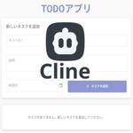
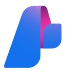
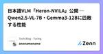
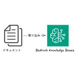
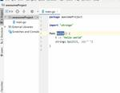
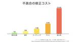
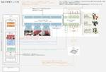
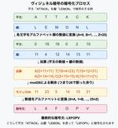
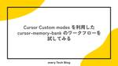
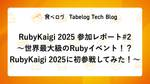

直近1週間の人気フィード
はてなブックマーク数を元に新着優先で並べ替え

MCPやAIエージェントに必須の「LLMの外部通信・連携」におけるセキュリティ観点 176GMO Flatt Security Blog
176GMO Flatt Security Blog
はじめに こんにちは。GMO Flatt Security株式会社 セキュリティエンジニアの山川(@dai_shopper3)です。 LLMはテキスト生成、要約、質問応答といった多様な用途に高い能力を発揮しますが、単体での活用にはいくつかの制約があります。そもそもモデル単体には、ただ入力された自然言語に対して文字列を生成するだけの機能しかありませんから、LLMをもとに自律的に行動するAIを作るには、外部と情報をやり取りし、具体的なアクションを実行するための手段が必要です。 また、モデルの知識は訓練データの収集時点で停止しており、それ以降の最新情報や特定の非公開情報も知りません（ナレッジカットオ…
1日前
Web API設計ガイドラインを公開しました 285フューチャー技術ブログ
<a href="https://future-architect.github.io/arch-guidelines/documents/forWebAPI/web_api_guidelines.html"><img
2日前

LLMフレームワークのセキュリティリスク - LangChain, Haystack, LlamaIndex等の脆弱性事例に学ぶ 165GMO Flatt Security Blog
はじめに こんにちは。GMO Flatt Security株式会社セキュリティエンジニアの森(@ei01241)です。 近年、大規模言語モデル（LLM）の進化により、チャットボット、データ分析・要約、自律型エージェントなど、多岐にわたるAIアプリケーション開発が進んでいます。LangChainやLlamaIndexのようなLLMフレームワークは、LLM連携や外部データ接続などを抽象化し開発効率を向上させる一方、その利便性の背後には新たなセキュリティリスクも存在します。 本稿では、LLMフレームワークを利用・開発する際に発生しやすい脆弱性を具体的なCVEを交えて解説し、それぞれ脆弱性から教訓を学…
2日前

【GIS】365日20℃生活☀️日本の平年気温データから適温で暮らし続ける方法を探る 138朝日新聞社 メディア研究開発センター
はじめにメディア研究開発センターの石井です。データジャーナリズムのためのデータ分析、文章校正AI Typolessの開発などを担当しています。続きをみる
3日前

MCPにおけるセキュリティ考慮事項と実装における観点（前編） 46GMO Flatt Security Blog
MCP logo ©︎ 2024–2025 Anthropic, PBC and contributors | MIT license はじめに 本記事は、セキュリティエンジニアのAzaraこと齋藤とコーポレートセキュリティエンジニアのhamayanhamayanが、社内で行ったディスカッションを元に記述した記事です。 本記事は、MCP の利活用の際に考えるべき、セキュリティに関する考慮事項や、脅威の想定、実装時気にすべき観点などについてまとめたシリーズの前編になります。前編では、MCPに関する基本的な事項を扱いながら、利用者側の目線でMCPに対するセキュリティを考えていきます。社内での利活用…
6時間前
カカクコムにおけるDifyエンタープライズ版の全社導入と活用ポイント 72Tabelog Tech Blog
目次 目次 はじめに Dify導入の背景 エンタープライズ版の機能 マルチワークスペース SSO Kubernetesデプロイ Admin API カカクコムの事例紹介 ワークスペース設計 運用体制 アプリの公開方法 サンドボックスワークスペース Google Cloudによるインフラ構築 エンタープライズ版の運用における課題 全社導入の成果と課題 まとめ はじめに こんにちは。AIトランスフォーメーション推進部に所属している遠藤怜です。 カカクコムでは「Dify」のエンタープライズ版を全社のAI活用プラットフォームとして導入しました。 通常のDify（コミュニティ版）にはない企業向けの機能が…
1日前
生成AI向けのドキュメント変換技術 rokadoc 〜高い精度をどのように実現しているのか〜 52NTT Communications Engineers' Blog
こんにちは。イノベーションセンター Generative AI チームの安川です。 今回は私の所属するチームで開発しているrokadocというプロダクトの内部で利用している技術要素に重点を置いて紹介します。 本記事では「ドキュメント変換技術」であるrokadocについて、内部で利用している技術について紹介します。 rokadocはドキュメントをアップロードするとそれを生成AIで扱いやすいテキストへ変換するという機能を持ちます。 ユーザはドキュメントの内容に応じて自身で複雑な処理を考える必要がないというメリットがありますが、一方でその内部ではレイアウト解析やAI-OCRなどの複雑な処理を行ってい…
2日前

Cline × Amazon Bedrock でCRUDアプリのフルスタック開発をやってみた 31Taste of Tech Topics
はじめに こんにちは一史です。 先日神代植物公園に行きました、まだ藤の花が残っておりとても綺麗で癒されました。昨今、開発支援のAIエージェントとしてClineが話題になっています。 github.comClineはVisual Studio Code(VSCode)の拡張機能であり、単なるコード生成だけでなく、コマンド実行や動作確認・デバッグまでを一貫して行ってくれる点が特徴です。Clineは任意の生成AIモデルを指定し、コードを生成させることができます。 このためセキュアで実際の開発現場でも活用されるAmazon Bedrockと組み合わせることでビジネスシーンでの活用も可能となります。 今…
12時間前
SmartHRのプロダクトマネージャー職にご興味をお持ちの方へ 38SmartHR Tech Blog
これはなに？ SmartHRのプロダクトマネージャー（以下、PM）職にご興味をお持ちの方向けに、参考になりそうな情報をまとめたものです。下記から読みたいコンテンツを選んでください。 会社紹介 募集中のプロダクトマネージャーの求人 SmartHRのPMの魅力とは？ PMメンバーによる発信 SmartHRについて 会社紹介 会社紹介資料 募集中のプロダクトマネージャーの求人 現在は以下のポジションを募集しています。 プロダクトマネージャー（労務） プロダクトマネージャー（タレントマネジメント） プロダクトマネージャー（プロダクト基盤） プロダクトマネージャー（新規事業） テクニカルプロダクトマネー…
1日前
軽量な視覚言語モデル「Heron」のiOSアプリを公開しました
35Tech Blog - Turingのフィード
完全自動運転の実現を目指すTuringでは、Webスケールのデータセットで学習した大規模視覚言語モデル（VLM）の持つ「常識」を利用することで、幅広い状況に対応できる自動運転モデルの開発を実現できると考えています。この目標のもと、基盤AIチームでは2023年から視覚言語モデル「Heron」の開発に取り組んできました。https://www.watch.impress.co.jp/docs/news/1529946.htmlVLMを自動運転に活用していく上で重要な要件の一つが「軽量」であることです。Turingでは経済産業省およびNEDOが推進する日本の生成AIの開発力強化に向けた...
2日前
開発を止めない段階的フロントエンドリプレイスの実践 (1) 計画編 19エムスリーテックブログ
フロントエンドリプレイスにおいて、開発を継続しながら段階的に移行を進めた計画について紹介します。
13時間前
今年も出たぞ！「テスト文字列にうんこ入れるな」研修資料2025年版！【祝・30万View突破】 26技術ブログ – infiniteloop
こんにちは松井です。今は会長職をやっております。 もう結構前になりますが、2021年の新卒研修向けに「テスト文字列に”うんこ”と入れるな」という資料を作成しました。おかげさまで多くの方に読んでいただいたようで、現時点で累…
1日前

【連載】Cybozu.comクラウド基盤の全貌 第3回 Neco のネットワーク 25Cybozu Inside Out | サイボウズエンジニアのブログ
はじめに クラウド基盤本部でサイボウズの Kubernetes 基盤である Neco の開発・運用を担当している杉浦です。 前回の記事では Neco について、サーバ管理の方法や自社製の Kubernetes エンジンである CKE を紹介しました。今回は Neco のネットワークに注目して、CKE によって構築した Kubernetes クラスタがどのようにしてクラスタ内外と通信しているかを紹介します。 Kubernetes クラスタのネットワークについて Neco のネットワークについて紹介する前に、まず一般的な Kubernetes におけるネットワークについて紹介します。Kuberne…
2日前

Azure AI FoundryのServerless APIでPhi-4-miniを簡単にFine Tuningする 22Taste of Tech Topics
こんにちは。データサイエンスチームYAMALEXの@Ssk1029Takashiです。 (YAMALEXについて詳細はこちらをぜひご覧下さい。) www.acroquest.co.jpつい先日Phi-4-reasoningというモデルがMicrosoftから発表されました。 軽量な事前学習済み言語モデル（SLM）も性能が上がってきて利用されることが増えてきています。 SLM は量子化などを施すことで、ハイエンド GPU を使わずとも動かせる点が利点です。 そのため、外に出せないデータを扱ったり、通信できない環境で利用されることが多いとされています。SLMを扱う場合に必要になるのはFine Tu…
2日前

日本語VLM「Heron-NVILA」公開 ─ Qwen2.5-VL-7B・Gemma3-12Bに匹敵する性能 35Tech Blog - Turingのフィード
はじめにチューリングの横井です。チューリングでは視覚と言語を統合的に理解できるAIを自動運転に応用するため、Vision Language モデル（VLM）「Heron」の開発に取り組んでいます。このたび、経済産業省およびNEDOが推進する日本の生成AIの開発力強化に向けたプロジェクト「GENIAC」第2期の支援のもと開発したVLM「Heron-NVILA」15B, 2B, 1B, 33Bを公開しました。https://huggingface.co/turing-motors/Heron-NVILA-Lite-15Bこの記事では開発したHeron-NVILAのアーキテクチャ、学...
3日前

PdM像は十人十色──「我々は何者か」 32RAKUS Developers Blog | ラクス エンジニアブログ
どうも、稲垣です。 先日、PM、PdM向けイベントを0からみんなで作る会に参加しました 参加のきっかけは、これまでとは少し違った雰囲気のイベントだったこと。それくらいの軽い気持ちでしたが、参加してみると、たくさんの気づきがありました。 せっかくなので、ブログにまとめてみようと思います。 思ったことを、感じたままに綴ります。読んでくださる皆さんにとって、何かしらの学びや気づきになれば嬉しいです。 前置きが長いですが是非！（イベントの内容については、ブログの後半でレポート） プロダクトマネージャーの解像度のあげ方 そもそもプロダクトマネージャーって何者？ 「我々は何者か？」を明らかにすること ラク…
2日前

Amazon Bedrock Knowledge Basesでカスタムデータソース＋直接取り込みAPIを利用する 31Taste of Tech Topics
こんにちは。大塚です。AIの進化スピードに驚かされる毎日です。 生成AIだけでなく、データ活用の仕組みもどんどん進化していますね。今回は、昨年12月にサポートされたBedrock Knowledge Basesのカスタムデータソースとドキュメントの直接取り込みAPIを試してみたいと思います！aws.amazon.com 1. はじめに 2. カスタムデータソース＋直接取り込みAPIの概要とメリット カスタムコネクタとは？ ドキュメントの直接取り込みとは？ 3. 実際に試してみる 事前準備（ナレッジベースの作成） AWSマネジメントコンソールからドキュメントを投入 APIからドキュメントを投入 …
3日前
ファン国家のために"人類の失敗"を代替する。Gaudiyがデータサイエンスと機械学習をやっていく話 11Gaudiy Tech Blog
はじめまして。ファンと共に時代を進める、Web3スタートアップ Gaudiy の tatsuki (@tatsukiiine)と申します。 Gaudiyは、誰もが好きや夢中で生きられる社会「ファン国家」の創造をビジョンに掲げ、その実現をエンタメ領域から目指しています。 note.com この「ファン国家」は、単一の巨大なコミュニティというよりは、多様な価値観や熱量をもっている無数の「マイクロコミュニティ」が相互に繋がり合うネットワークのようなものです。それは、情熱、創造性、ビジネス、テクノロジー、そして多くの人々の相互作用が渦巻く、複雑でダイナミックなエコシステムになるはずです。 しかし、この…
15時間前
RubyのNamespace機能を試す 28Money Forward Developers Blog
Rubyの開発版にNamespaceが導入されました。1つのRubyプロセスの中に分離された名前空間を提供することが目的の機能で、先日開催されたRubyKaigi 2025でも大きなトピックの1つとなっていました。 github.com この記事では、Namespaceの目的と使い方を簡単に見ていこうと思います。より詳しく知りたい方は、記事末尾の参考資料を読んだり、ぜひ手元で動かしてみたりしてください。 Namespaceの目的 Namespaceの目的は、大きく以下の3つです。これはNamespaceが提案されているチケットに書かれています。 ライブラリ間での名前の衝突を避けること 意図しな…
2日前
マルチ DBMS ベンチマークツール BenchBase を MySQL で使ってみる 25スマートスタイル TECH BLOG
はじめに 今回の記事では、BenchBase というベンチマークツールについて紹介してみたいと思います。 弊社では、データベースの性能評価やワークロードのシミュレーション、検証にベンチマークツールをよく使用しています。 […]
3日前
アクセシビリティ学習の手引きとしての入門講座 178PLAID Engineer Blog - 株式会社プレイド
アクセシビリティの概念的な理解から、取り組むべき理由、ガイドライン、実践方法、その学び方など、幅広いテーマについての概説と、それら各論の参考資料の紹介。
7日前
食べログ多言語版のAI翻訳で73%のコスト削減とネイティブレベルの品質向上を実現した話 23Tabelog Tech Blog
はじめに プロジェクト背景：インバウンド需要と翻訳課題 AIモデル選定：性能評価とコスト分析 実験詳細 評価方法 データセット 評価対象モデル 評価結果 翻訳対象：多様な言語アイテムの分析 代表的な5つのパターン毎のアプローチの詳細 店名 支店名 メニュータイトル メニュー説明 口コミ内容 性能改善の知見 英訳ルールとfew-shotによる基礎性能の確保 文脈情報の効果的な活用 固有名詞処理の体系化 日本語特有表現への対応 GPT-4o miniで十分な性能に持っていくための工夫 コストを節約する工夫 導入効果 今後の展開 多言語への展開 未翻訳アイテムへの対応 最新技術のキャッチアップと継続…
3日前
比較的安全にMCPサーバを動かす 166LIFULL Creators Blog
KEELチーム の相原です。 前回のエントリは「小さい経路最適化ミドルウェアを実装してあらゆるAZ間通信を削減する」でした。 www.lifull.blog 今回は、MCPサーバを比較的安全に動かすために色々やってた話を書きたいと思います。 MCPについて MCPサーバのリスク なるべくローカルで動かさない ローカルではせめてDockerで動かす 無理やりHTTP Transportに対応する セッションの開始 コマンドの起動 ペイロードを受け取るためのエンドポイントの実装 まとめ
6日前
SmartHRのPMにおけるAI活用事例——Cursor、NotebookLMなど 139SmartHR Tech Blog
はじめに こんにちは。SmartHRで勤怠管理プロダクトのPM（プロダクトマネージャー）を務めている@hiroki_mです。 私が扱う領域は勤怠管理という領域ですが、プロダクト開発の現場では、CursorやDevin、ClineなどのAI開発支援ツールを積極的に活用しています。 この記事では、私がPMとしてAI開発支援ツールをどのように活用しているかを紹介します。 AIを活用する目的はなにか PMの業務を効率化することで、PMとしてより価値を生む業務に集中するためです。 勤怠管理機能の開発チームはとても優秀で、爆速で開発を進めています。PMが開発をスケールするうえでボトルネックとならないよう、…
7日前
社内で機械学習コンペ開催！ワイワイ楽しんだ1日をレポート 19エムスリーテックブログ
こんにちは、AI・機械学習チームの氏家と農見です。 エムスリーでは、東京のみならず福岡・関西など全国各地にメンバーがおり、開発を進めています。 ただ、チーム全員での交流も大事ということで、AI・機械学習チームでは四半期に一度のペースでチーム全員で集まって様々なイベントを開催しています。 今回は、そのイベントの最新版として機械学習コンペを開いたので、その様子をご紹介します！ 当日の様子 ちなみに、前回はGameDayと称して、開発環境で人為的に発生させた障害に対して、その対応のシミュレーションをしました。 こちらの記事で当日のワイワイした雰囲気を感じていただけるので、ぜひこちらもご覧ください！ …
2日前

【LAPRAS Engineer Talk #Special】 に出演させていただきました 6Repro Tech Blog
こんにちは、Repro Booster のプロダクトマネージャーの Edward Fox です。 先日LAPRASさんの主催する【LAPRAS Engineer Talk】に出演させていただき、その動画が公開されたのでお知らせです。 LAPRAS CTOの興梠さんからのキラーパスがテンポよく繋がり話が非常に盛り上がったため、全体で50分ほどの尺になり、動画は前後編に分かれていますｗ 前編では Repro Core Unit の 村上より、Reproの大規模なトラフィックを支えるデータ処理基盤について説明しています。 【前編】事業を支えるサービス基盤のアーキテクチャと今後の挑戦 前編の推しポイン…
10時間前

Goのテストをはじめてみよう（2025年版） 106
フューチャー技術ブログ
<p><a href="/articles/20250413a/">春の入門祭り2025</a> 13本目の記事です。</p><h1 id="はじめに"><a href="#はじめに" class="headerlink"
6日前
TSKaigi2025にはてなのエンジニアが2名登壇します！ 3Hatena Developer Blog
2025年５月23日-5月24日にベルサール神田でTSKaigi 2025が開催されます！ 2025.tskaigi.org はてなはブロンズスポンサーとして協賛しています。また、id:cateiruがスタッフとして関わっています。 さらに、エンジニア2名のプロポーザルが採択され、id:mizdraとid:susisuが登壇します！！ 登壇内容を以下に簡単にご紹介します。 また、イベントスタッフとして参加しているid:cateiruからのコメントもご紹介します。 id:mizdra フロントエンドエキスパートの id:mizdra です。私は2日目に「TypeScript Language S…
14時間前
【Capybara×生成AI】自然言語によるブラウザ自動テストを試す 3GMO Developers
はじめに 今回紹介する生成AIを活用した自動テストツールは「Charai」という名前でGitHubに公開されています。Charai(Chat + Ruby + AI) driver for Capybara. Proto […]
14時間前

CursorでGoogle Apps Script(GAS)のAIコーディングしてみた
59朝日新聞社 メディア研究開発センター
メディア研究開発センターの山本剛史です。最近、AIエージェントが大きな話題を集めています。私も話題のAIエディタ「Cursor」を試してみたところ、自分がよく利用しているGoogle Apps Scriptでは非常に高精度なスクリプトを生成してくれて驚きました。そこで、Google Apps Script (GAS) でのプログラミングに焦点を当て、その使用感や具体的な成果について共有したいと思います。続きをみる
7日前
Cursor Agent がQAエンジニアのプロダクト理解を加速させてくれた話 56LayerX エンジニアブログ
はじめに こんにちは、LayerX バクラク事業部で請求書発行を担当している QAエンジニアの genny です！ 最近、API の自動テストを実装する中で、プロダクトコードの処理フローを追う必要に迫られました。Cursor を活用することでスムーズに理解を深めることができたので、その過程で得た知見を共有できればと思います。 なぜプロダクションコードを読む必要があったのか 以前のチームでは Ruby on Rails のシステムに携わっており、その時はある程度コードを読めるようになっていましたが、バクラクのバックエンドで採用されている GraphQL や Go で実装されたシステムに携わった経…
6日前
AWS Documentation MCP Server でAWSのFAQアシスタントを作成する 53Taste of Tech Topics
はじめに データ分析エンジニアの木介です。 AWSの公式ドキュメントで欲しい情報を探そうとしても、なかなか目的のページが見つからなかったりすることってありませんか？ AWSから「AWS Documentation MCP Server」が公開されたため、本記事では、それを利用して、最新のAWSドキュメントに基づき、質問に回答してくれるFAQアシスタントの作成方法について紹介したいと思います。MCP Serverの呼び出しには、Claude Desktop および dolphin-mcp を利用します。github.com はじめに 概要 1. MCPとは MCPのしくみ 2. AWS Docu…
7日前

外部仕様書の確認を Slack ワークフローに組み込むことで、 Devin くんにサポートしてもらってみた 50KAKEHASHI Tech Blog
カケハシの AI 在庫管理でソフトウェアエンジニアをしている鳥海 (@toripeeeeee) です。こちらの記事は 生成AI研究会 での取り組み記事になります。 カケハシでは、エンジニア個々のコーディング支援に留まらず、AI技術を活用して開発プロセス全体の生産性と品質を向上させることを組織的な目標としています。そこで今回は、こちらの記事で紹介した Slack のワークフローに Devin を用いて開発プロセスにAIを載せることで、リリース前の外部仕様書のチェックをAIにサポートしてもらう取り組みにトライしましたので、ご紹介したいと思います。 なぜ外部仕様書のレビューが重要なのか そもそも外部…
6日前
AI PMワークフロー「aipm_v0」の使用例と応用を考える 47株式会社マインディア テックブログのフィード
3秒まとめこの記事の目的みやっち氏作のAI PMワークフローの理解と社内プロジェクトへの応用可能性の探求内容AI PMの概要とコンセプト「aipm_v0」の説明「オンライン定性調査プラットフォーム構築」における活用シミュレーション。8年前に企画してローンチしたサービス。考察や応用事例。示唆が多いので解説。期待される効果プロジェクト管理業務の効率化と質の向上AI AgentやDigital Twin、ドキュメンテーションワークフローへの応用 AI PMとは？AIを活用した、プロジェクトマネジメントの新しいアプローチです。目的:...
6日前
エンジニア向けオフラインイベントの楽しみ方 3
LayerX エンジニアブログ
こんにちは。バクラクビジネスカード開発チーム エンジニアの iwamatsu です。 皆さんは勉強会や Meetup などのオフラインイベントに参加したことはありますか？ ご存知の通り昨今は AI の話題で持ち切りですが、それに伴って今各所で AI 活用事例を共有し合うイベントが盛んに開催されており、所属を超えたオフラインでの交流が今まで以上に活発になってきているなと感じています。 でもオフラインイベントに参加するのって最初ちょっとハードル高くないですかね？どうやって参加したら良いんだろうとか、懇親会で孤立したらどうしようとか。 自分も以前はそういったイベントに参加したことがなかったんですが、…
1日前

『速読会』に参加してみた 35RAKUS Developers Blog | ラクス エンジニアブログ
こんにちは、稲垣です。 2025年度からはイベント参加や登壇だけでなく RAKUS Developers Blog | ラクス エンジニアブログやRakus Designers Rakus Designers にも積極的に投稿して行こうかなと思っています。 Xでもプロダクトマネージャーのこと、デザイナーのこと、マネジメント全般なことをポストしていますのでよろしくお願いします。 前回は「フィッシュボウル」参加について書きましたが、今回はその翌週に参加した「速読会」について書きます。 この会ですが、今PdMの中では話題になっています。参加した方々の声がブログにノートであがっています ●ログラスさん…
7日前
顧客のリピート行動を取り入れた推薦アルゴリズムの現在
35MonotaRO Tech Blog
はじめに MonotaROの販促とパーソナライズチラシについて 間接資材の推薦における課題 「もう一度購入する枠」における推薦手法 Buy It Again: Modeling Repeat Purchase Recommendations (KDD'2018) Personalized Category Frequency Prediction For Buy It Again Recommendations (RecSys'23) リピート行動を考慮する推薦手法 RepeatNet: A Repeat Aware Neural Recommendation Machine for Sess…
7日前

ロボティクス領域の VLA モデル「π0」の仕組みを理解する 4ABEJA Tech Blog
こんにちは！ABEJA で ABEJA Platform 開発を行っている坂井（@Yagami360）です。 近年の ChatGPT 等の LLM の飛躍的な発展とマルチモーダル化の流れに伴い、ロボティクス領域においても LLM を活用して、テキストでロボット制御できるようになってきているようです。 LLM に対して画像を入力もできるようにして｛画像・テキスト｝でのマルチモーダル化したモデルを VLM [Vision-Language Model] といいますが、ロボティクス制御等で LLM を活用できるように更にこれを拡張して、ロボットのアーム制御などの行動ベクトルも入力できるようにして｛行…
3日前
チームの“秘伝のタレ”を Gemini に継承！Code Customization 実践ガイド 28Google Cloud Japanのフィード
はじめにあなたのチームにも、大切にしている独自のコーディングスタイルや共通ライブラリ、いわば “秘伝のタレ” と呼べるような特別なノウハウがありませんか？そうしたチーム固有の 貴重な開発資産 を Gemini にしっかりと “継承” させ、AI による開発支援のポテンシャルを最大限引き出す機能 が、Code Customization です。本記事は、Code Customization 機能の基本設定から具体的な活用方法まで、手順を追って解説しています。Gemini Code Assist の導入を検討されている方から、既に利用していてさらにチームに Gemini の開発支援を...
6日前
エンジニアリング(プレイング|ノンプレイング)マネージャー 28
WHITEPLUS TechBlog
はじめに マネジメントスタイルの概要 ノンプレイングマネージャーとは？ プレイングマネージャーとは？ ノンプレイング体制での学び 主なタスク 取り組んだタイミング 良かった点（Pros） 苦労した点（Cons） プレイング体制での学び 主なタスク 取り組んだタイミング 良かった点（Pros） 苦労した点（Cons） 行き来して見えたこと まとめと今後の挑戦 はじめに CX開発グループ・アプリ開発グループでエンジニアリングマネージャー（EM）をしている仲見川です。昨年9月よりCX開発グループのEMを担当することになり半年がたちました。プレイングマネージャーと、ノンプレイングマネージャーの両方を経…
6日前

Ruby: Rackの仕組みとWebSocketやSSEとの組み合わせを詳しく理解する（翻訳） 22TechRacho
概要 元サイトの許諾を得て翻訳・公開いたします。 英語記事: Binary Solo | A deep dive into Rack for Ruby 原文公開日: 2024/10/30 原著者: Ayush Newatia 日本語タイトルは内容に即したものにしました。 Ruby: Rackの仕組みとWebSocketやSSEとの組み合わせを詳しく理解する（翻訳） Rackは、現在のあらゆる著名なRuby製Webフレームワークの基盤であり、RubyアプリケーションとWebサーバーの間のインターフェイスを標準化します。 このメカニズムによって、Rack準拠のWebサーバー（Puma、Unicorn、Falconなど […]The post Ruby: Rackの仕組みとWebSocketやSSEとの組み合わせを詳しく理解する（翻訳） first appeared on TechRacho.
6日前

RubyKaigi 2025 の振り返り会を開催しました [前編] 3freee Developers Hub
こんにちは! 関西でfreee販売の開発を担当しております bucyou こと川原です。 RubyKaigi 2025 の閉幕から3週間が経ちました。これまでに、Drinkup イベントの様子やLTの内容について紹介してきましたが、今回は社内向けに実施したトークからの学びの共有会のダイジェストをお送りします。 RubyKaigi 2025 のスポンサーボードの前で 今までの RubyKaigi 2025 関連の記事はこちら developers.freee.co.jp developers.freee.co.jp 前半の登場人物 hachi: RubyKaigi 2025 ではLT登壇やDJに…
2日前
【暗号のおねぇさんこと酒見 由美】「高機能暗号とそれを支える物理・視覚暗号シンポジウム」に登壇しました 3GMO Developers
GMOサイバーセキュリティ byイエラエをはじめとするGMOインターネットグループでは、「ネットのセキュリティもGMO」をスローガンに、セキュリティ分野でさまざまな取り組みを進めています。2025年2月には、世界初の24 […]
3日前

眠れなくなるほど面白い暗号化技術 第2回 - 300年間暗号学者を欺き続けた魔法の表 3APC 技術ブログ
はじめに こんにちは、クラウド事業部の丸山です。 前回のシーザー暗号はいかがでしたか？ 単純ながらも暗号の基本概念を学ぶ絶好の入門編でしたね。 しかし歴史的に見れば、シーザー暗号の致命的な弱点はすぐに明らかになりました。 文字の出現頻度を分析するだけで簡単に解読できてしまうのです。 そこで今回は、この弱点を巧妙に克服した「ヴィジュネル暗号」のをご紹介します。 16世紀に考案されたこの暗号は、なんと300年もの間「解読不能な暗号」として君臨し、 「le chiffre indéchiffrable」（解読不能の暗号）という異名まで与えられました。 一体どのような仕組みが、当時の最高の頭脳たちをこ…
3日前

ペネトレーションテスト初心者が生成AIを活用して Hack The Box でペネトレーションテストを勉強してみた話 3ラック・セキュリティごった煮ブログ
デジタルペンテスト部の吉原です。 普段はプラットフォーム診断で診断作業や新規診断スクリプトを開発したりしています。 そんな私ですが、今回は、ペネトレーションテスト初心者である私が生成AIを使ったりして、Hack The Box （以下 HTB）でペネトレーションテストを勉強してみたお話を紹介したいと思います。 これからセキュリティ技術やペネトレーションテストを勉強してみたいけど、何か難しそう！という方々の参考になれば幸いです。 免責事項 当記事の内容は教育・学習およびセキュリティの向上目的で執筆されており、サイバー攻撃行為を推奨するものではありません。 第三者が所有する資産に管理者の許可なく…
3日前
「GigaViewer for Apps」 iOS アプリにおける VRT とユニットテスト 21Hatena Developer Blog
iOS アプリエンジニアの id:maiyama4 です。『Inside GigaViewer for Apps』連載7回目は、出版社向けマンガビューワのアプリ版である「GigaViewer for Apps」（以下 GigaApps）の iOS アプリのテストについて、Visual Regression Testing（以下 VRT）に重点を置いて紹介します。 VRT VRT の導入経緯 VRT のツール VRT 対象の選定 VRT を実行するデバイス メディアごとの設定を反映するためのモジュール構成 VRT の実装 参照画像の作成・更新 参照画像の置き場所 VRT の運用フロー ユニットテ…
6日前
【入社エントリ】成長のレバレッジと人生の揺らぎを求めて by tetty 20PLEX Product Team Blog
株式会社プレックスに転職して半年が経過したので、弊社と開発しているサクミルというプロダクトがいかにハードで純粋で熱いかを書かせていただきました！ソフトウェアエンジニアとしてプレックスで働く3つの面白ポイントも紹介しています！
7日前
DynamoDBコスト削減のための基本的な施策4点 5フューチャー技術ブログ
<img src="/images/20250512a/top.jpg" alt="" width="800" height="450"><h1 id="はじめに"><a href="#はじめに" class="headerlink"
3日前
Jetpack Composeのスクロール可能なTabRowにminWidthが設定できるようになります 16Mirrativ Tech Blog
こんにちは、Androidエンジニアの藤原(@fuji_tech7)です。 Jetpack ComposeのコンポーネントにScrollableTabRowがあります。 TabRowが指定領域にタブを敷き詰めて配置するのに対しScrollableTabRowはスクロール可能にすることでより多くのタブを配置することができます。 ただし、ScrollableTabRowは制限があり期待するレイアウトを作れませんでした。 その一つがScrollableTabRow内の子要素であるTabにminWidthを設定できないことです。 この課題について、最近動きがありましたので紹介します。 本記事内では正式…
6日前

同じ名前で分割代入する場合はショートハンドで強制するESLintルールをTypeScriptで作った 12
CastingONE Tech Blogのフィード
こんにちは！CastingONEの大沼です。!2025/05/12有識者から no-useless-rename というESLint本体に含まれているルールを紹介していただき、これでこと足りそうでした。この記事のカスタムルールの内容自体はほぼ意味のないものになってしまいましたが、カスタムルールを作っていく過程においては参考になるところもあると思うので引き続き残しておきたいと思います。 始めに弊社ではESLintルールのobject-shorthandを設定しており、ショートハンドで書けるものはショートハンドで強制されるようにしています。これによってコードがスッキリしたもの...
5日前
当エンジニアブログで実施したアクセシビリティ改善の方法についての解説 11PLAID Engineer Blog - 株式会社プレイド
文字やアイコンのコントラスト比、focusしたときに表示されないツールチップ、重複する代替テキスト、「アクセシブルな名前」のないリンク、ターゲット領域を広げるための重複するリンク。これらの問題と解決策、その背景にある考え方についての解説。
6日前
Storybook の parameters の型をいい感じにして便利に使う 7
LayerXのフィード
Storybook の parametersStorybook の parameters は、Story や Component に静的なメタデータやパラメタを追加するための機能です。これらのパラメータは addon の設定や Story の表示方法のカスタマイズなどに利用されます。// グローバルな parameters の設定export const parameters = { backgrounds: { default: 'light', values: [ { name: 'light', value: '#f8f8f8' }, ...
5日前
RubyKaigi 2025 に総勢35名で参加しました！みんなで書く感想レポート 7STORES Product Blog
スポンサーボードにみんなの名前を書きました こんにちは、ima1zumiです。RubyKaigi 2025 お疲れさまでした！みなさん、RubyKaigi 2025と松山は楽しんでいただけましたか？私はみなさんの感想ブログを読みながらRubyKaigiの余韻に浸る生活をしています。RubyKaigi 2025が終わらない。 STORES はNursery Sponsorとして、託児所の企画・運営をしました。また、会場ではブースを出したり、会期中にSTORES CAFE for WomenとSTORES CAFE at RubyKaigi 2025を開催したりと、盛りだくさんな3日間でした。 こ…
6日前
【インタビューVol.2 後編】動き出した“横断連携”。UX改善から対外発信まで、組織を変えたデザイナーたちの実装力
4GMO Developers
「UXチェックリスト」を共通言語に、全社を巻き込む —GMOインターネットグループ全体への課題感が高まるなかで、社内的にはどのような取り組みが進められたのでしょうか？ 岡本 くる美｜GMOメディア株式会社 サービスデザイ […]
7日前

Cursor Custom modes を利用した cursor-memory-bank のワークフローを試してみる 3every Tech Blog
はじめに こんにちは。リテールハブ開発部の池です。 エブリーは 2025/05/02 にプレスリリースを出した通り Cursor を全エンジニアとプロダクトマネージャーに導入し、AI活用による生産性の向上に積極的に取り組んでいます。 corp.every.tv 現在、世の中では Cursor のような開発支援ツールを使ってLLMをベースとしたエージェントの開発ワークフローを構築する動きが進んでいます。 エージェントに安定した挙動をさせるには、一貫したコンテキストの提供が必要であり、永続的なルールやファイルを用いてその振る舞いを制御するアプローチが一般的になりつつあります。 これには単なるドキュ…
5日前
「反響は二の次」で始めた、Tech Blog継続の舞台裏 3
ACES エンジニアブログ
こんにちは、株式会社ACES でテックリードをしている奥田(@masaya_okuda)です。 私の所属するAIソフトウェア事業部の開発チームはエンジニア7名ほどの1チームなのですが、昨年12月よりテックブログ強化月間をスタートし、本記事が19記事目となります！ 多い時は毎週1記事を更新する月もあり、なかなかの更新頻度だと思っています！（上には上がたくさんいますが…😅） 一方でどの開発チームでも、テックブログをもっと運用しようと思った際に一度は、 執筆の負担が大きい（他の作業もある） 執筆ネタが思いつかない そもそも何目的で書くんだっけ？ と、なかなか前に進めないことがあると思います。 本記事…
6日前

RubyKaigi 2025 参加レポート#2 〜世界最大級のRubyイベント！？RubyKaigi 2025に初参戦してみた！〜 3Tabelog Tech Blog
目次 目次 はじめに RubyKaigiとは？ なんでRubyKaigiに参加したの？ 愛媛に到着！ 食べログブースをご紹介！ スポンサー企業ブースも行ってきました！ イタンジ株式会社 株式会社スマートバンク 株式会社アンドパッド その他イベントやスペース スタンプラリー 本屋 ハックスペース キッチンカー、3時のおやつ クロージング RubyKaigiに参加してみて はじめに こんにちは！食べログ開発本部ウェブ開発1部のすっさんです。4月で入社2年目になりました🌸 普段は食べログのバックエンド開発に取り組んでいます。 今回は、Rubyの世界最大級(!?)とも称されるRubyKaigi 202…
7日前
Clineを味方につけてDeNAの裏側を冒険してきた 3Blog on DeNA Engineering
はじめに はじめまして！2025年3月に2週間の内定承諾前の学生向け短期就業型インターンに参加した、26卒の尾形 拓夢と申します。 このブログでは以下のような内容を中心にお伝えしていきます。 2週間のインターンでClineを駆使してタスクに取り組んだ話 実際に働いてみて感じたリアル 「DeNAって優秀な人ばっかりで、うまくやっていけないんじゃないか」「DeNAがどんな働き方してるのか全くわからない」といった不
7日前